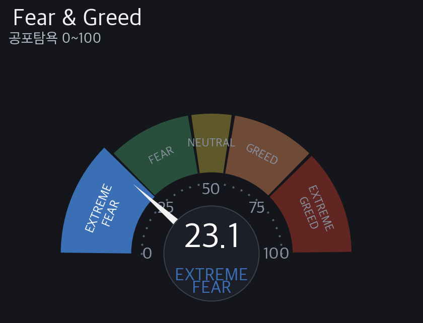
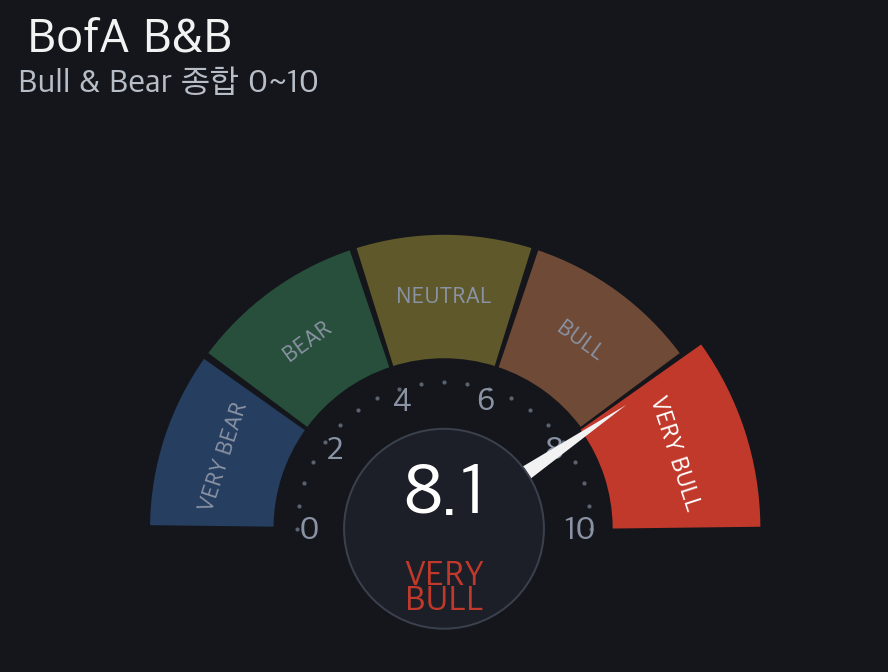
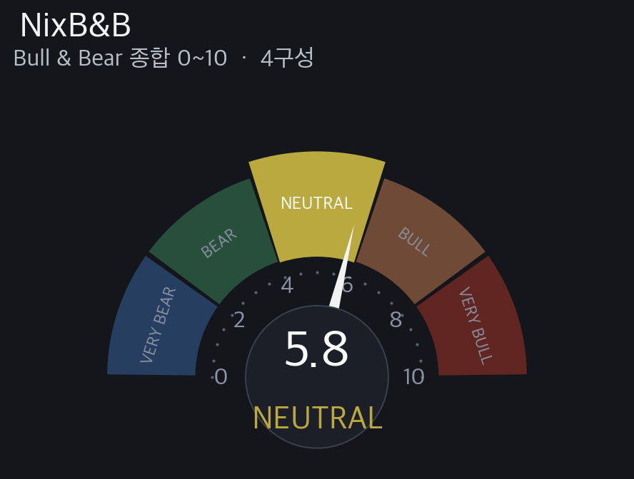
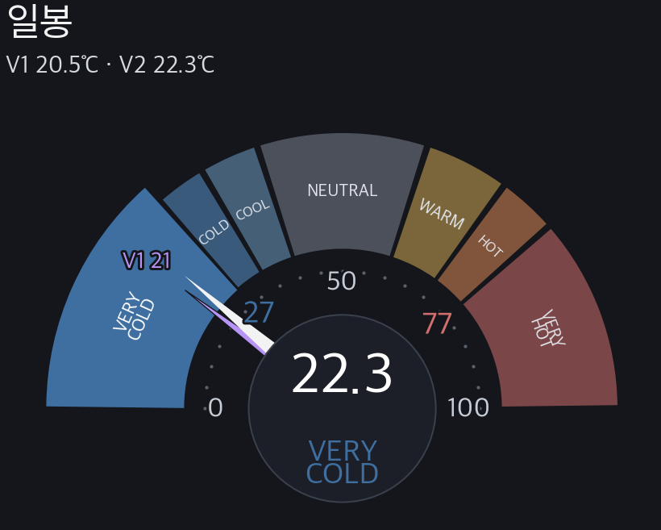
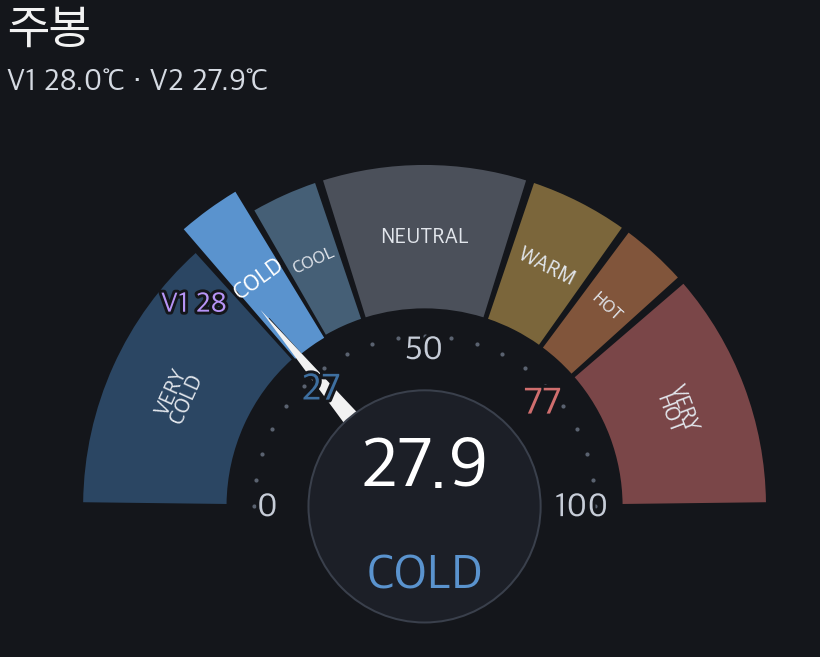
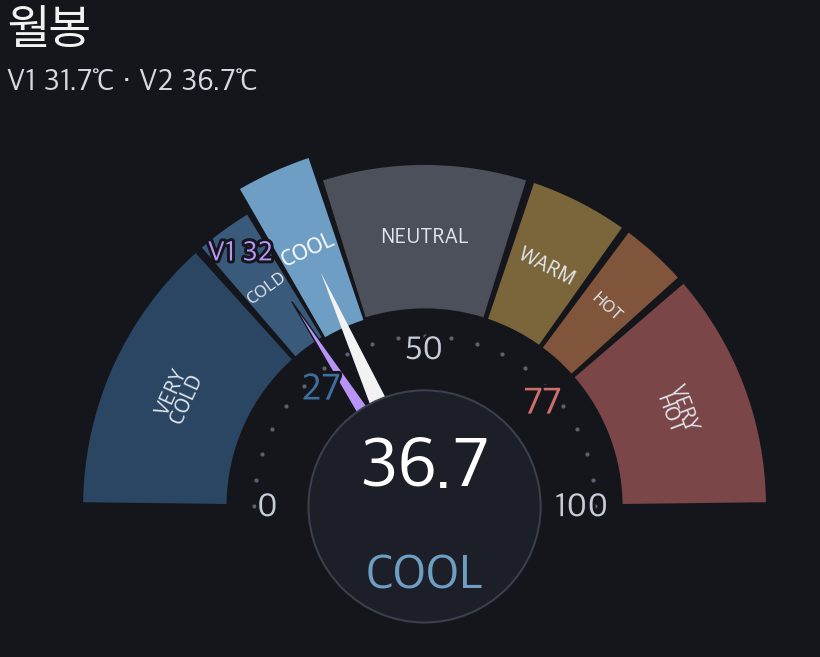
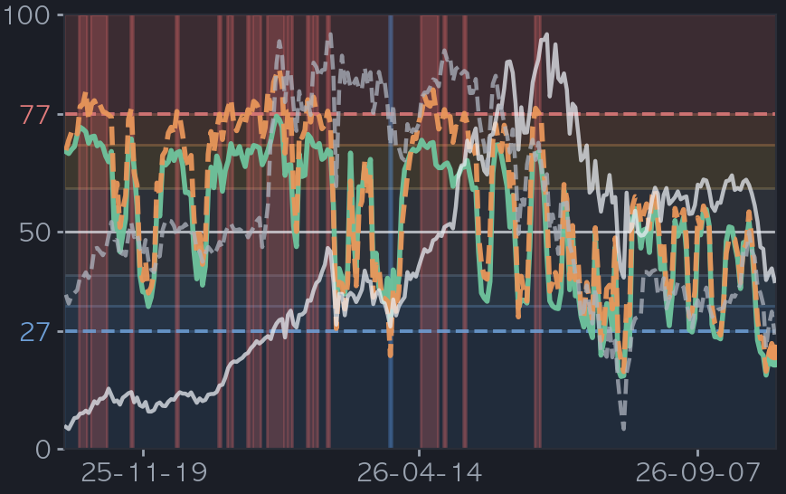
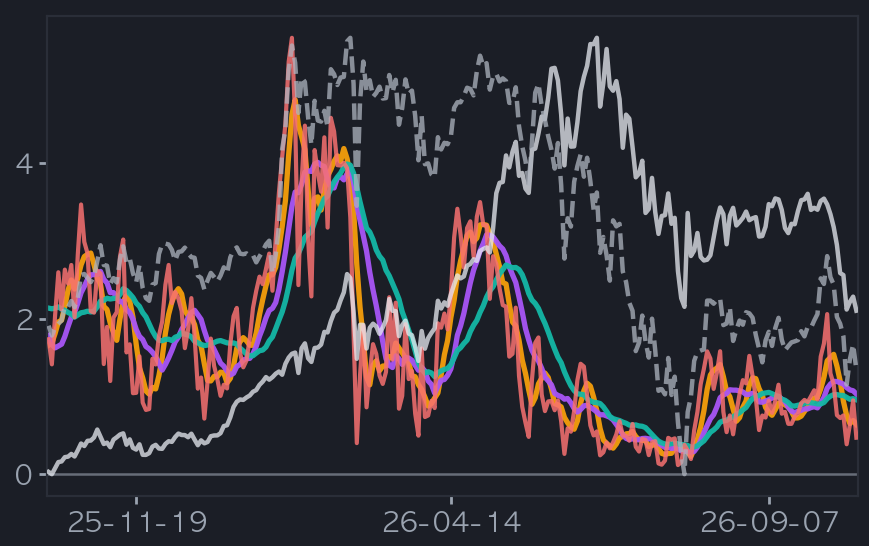
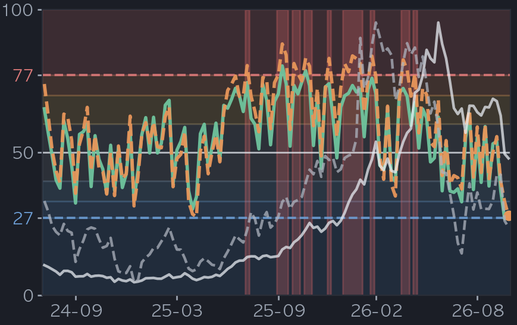
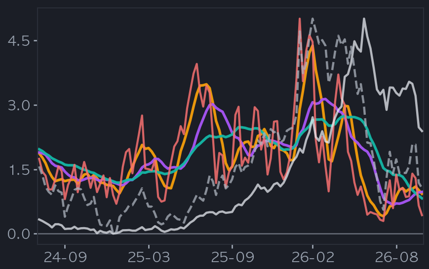
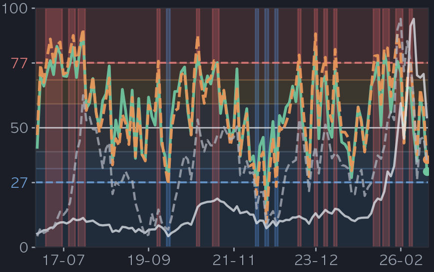
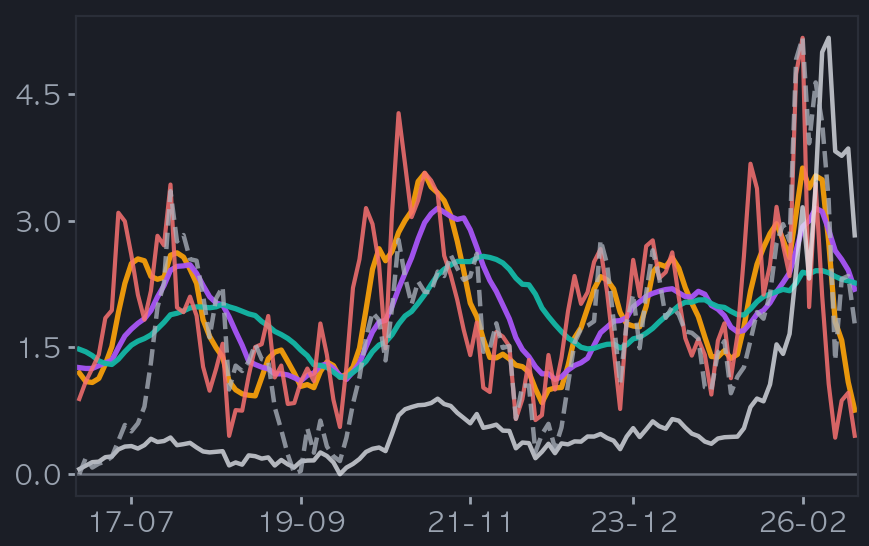
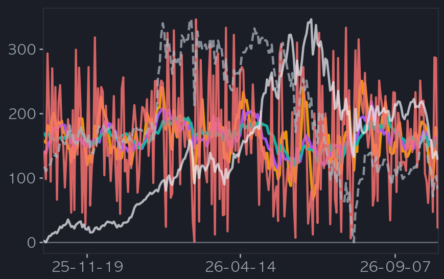
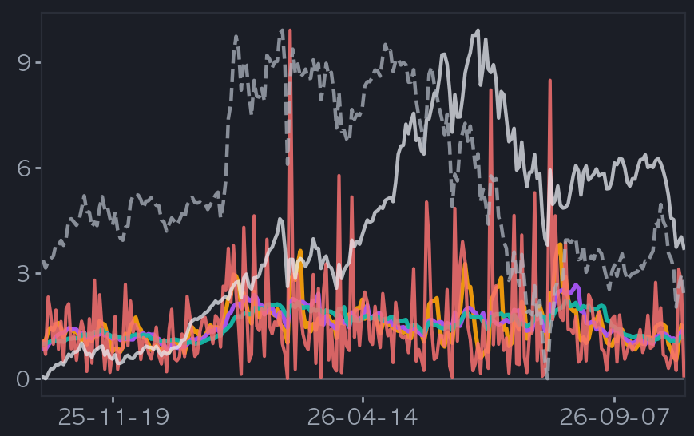
| 항목 | Bull(상승) 당일 | Bull MA22 | Bear(하락) 당일 | Bear MA22 |
|---|---|---|---|---|
| Count | 23 | 153.4 | -316 | -185.2 |
| Energy | 0.08 | 1.18 | -3.50 | -1.41 |
| Norm | 0.47 | 0.96 | -3.56 | -2.60 |
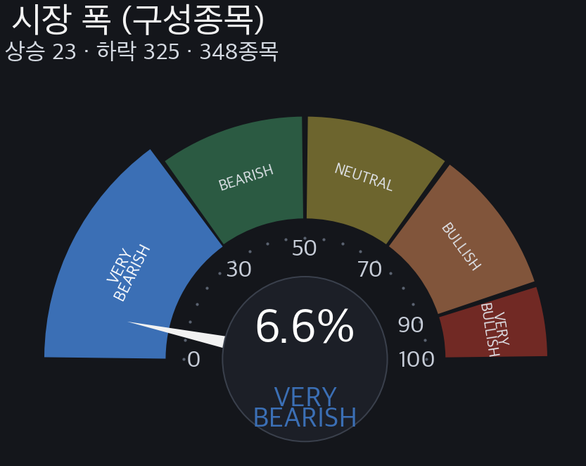
VERY COLD V2 22.27℃ · V1 20.53℃ · 고점 거동 미확보.
온도 VERY COLD(22.27) 바닥권·반등 잠재. 폭 6.61% VERY BEARISH. 고점 미armed.
과열은 타이밍 신호가 아님. 확률적 참고 — 투자권유(매수·매도·비중) 아님.
온도 V1/V2: 가격 과열/과냉 0~100℃. 높을수록 뜨겁·후행. V2 낮을수록 저점권·높을수록 고점권.
팬(고점/저점): 방법론이 본 고점(위·빨강)/저점(아래·파랑) 목표. 1차=median(≈50% 도달)·×3=최대.
고점 지속 vs 조정 경계: 온도 고점 후 반응. 지속 = 매도 신호 아님(bull premium) / 조정 경계 = 고점 뒤 평균회귀(조정 위험).
스탠스(관점 우위): 매수 관점 우위 = 과냉권 → 저점 반등 여지 / 매도 관점 우위 (조정 경계) = 과열권 + 고점 지속 신호 없음 → 평균회귀 조정 위험 — 매도 쪽 관점이 우세하다는 뜻('매도를 경계하라' 아님 · 매도 권유 아님) / 관망 = 과열이나 고점 지속(bull premium) · 중립 · 고점 거동 미확보.
반전 edge: 과냉/과열 존 진입 후 전방수익이 baseline 대비 유의미한지(2010~). 승률·초과수익으로 검증.
전방 확률: 현재 온도존일 때 과거 h봉 뒤 상승 비율(50%=동전). 조건부 빈도이지 예측 아님. neff<20=소표본 → →값=2010~ base-rate 베이지안 축소(원값·축소 병기·신뢰보정, w=neff/(neff+20)).
수급 3주체: 외국인·기관·개인 순매수(억원). 빨강=순매수·파랑=순매도. 방향 주체 확인용.
마인드셋: 점쟁이 아니라 일기예보 — 방향보다 위험 크기. 확률이지 확정 아님.
| 용어 | 정의 | 쉽게 읽기 | 구분 |
|---|---|---|---|
| 단위 읽는 법 (% · pp · 점수 차이) | % = 비율·변화율(나눗셈: 오늘 ÷ 어제 − 1, 예 +1.20%). pp = 백분율끼리의 차이(뺄셈: 적중 92% − 기저 51% = +41pp). 점수 차이 = 0~100 점수(온도·F&G 등)끼리의 차이는 단위 없이 숫자만(예: 고점선 77 까지 +3.2). '%p'·'p' 를 붙이지 않는다. | % 는 얼마나 '비율로' 변했나, pp 는 퍼센트끼리 '뺀' 차이, 온도처럼 점수끼리의 차이는 그냥 숫자. | 자체 |
| V1 / V2 | V1=6팩터(US)/10팩터(KR)·V2=9팩터(US)/11팩터(KR)(등급 기준). 자체 지표, 산식은 비공개(값·등급·검증만 공개). | 온도를 재는 두 버전. V2가 등급 판정 기준. | 자체 |
| 통합 vs 지수별 | 통합 = KOSPI200+KOSDAQ150 종합 관점(헤드라인은 종합 6팩터). 지수별 = KOSPI200·KOSDAQ150 각각의 V2·팬·반전(★고점/저점 판정은 지수별 세트가 본체). | 전체 한 장 요약(통합) 과 지수 하나씩 본 것(지수별) 은 쓰임이 다름. | 자체 |
| 온도 존 7단 | VERY COLD<27 / COLD 27~33 / COOL 33~40 / NEUTRAL 40~60 / WARM 60~70 / HOT 70~77 / VERY HOT≥77 | 온도를 7구간으로 나눈 이름표. COLD=싸짐·HOT=비쌈. | 자체 |
| armed | 반전 신호 켜짐(트리거 조건 도달). 미armed=대기. | 반전 신호가 켜졌나(켜짐=armed). | 자체 |
| M1 고정존 | 반전 방법①. 27/77 고정 문턱으로 과냉·과열을 판정. | 정해진 눈금(27·77)을 넘으면 반전 후보로 보는 방법. | 자체 |
| M2 동적존 | 반전 방법②. ZigZag 스윙 고·저점에서 역산한 동적 문턱(표본 외 OOS 검증). | 과거 실제 꼭지·바닥에서 거꾸로 계산한 눈금을 쓰는 방법. | 자체 |
| bull premium | 온도 고점 후에도 상승이 이어지는 거동 = 고점이 매도 신호가 아님. | 뜨거워도 더 오르던 장. 고점=팔 때가 아니라는 뜻. | 자체 |
| 조정 경계 | 온도 고점 후 평균회귀(하락)가 우세한 고점 거동(sell_signal). 고점 지속(bull premium) 신호가 없어 조정 위험이 큰 상태. | 뜨거워진 뒤 되돌아온 경우가 더 많았던 장. 고점에서 조정(하락)을 조심하라는 뜻. | 자체 |
| 관점 우위(스탠스) | 온도존과 고점 거동으로 정한 확률적 관점. 매수 관점 우위 = 과냉권(VERY COLD·COLD·COOL) → 저점 반등 여지. 매도 관점 우위 (조정 경계) = 과열권(WARM·HOT·VERY HOT) + 고점 지속 신호 없음 → 평균회귀 조정 위험. 관망 = 과열이나 고점 지속(bull premium)·중립·고점 거동 미확보. 매수·매도 권유가 아님. | 지금 온도에서 과거에 어느 쪽(반등 / 조정)이 더 많았는지로 본 관점. '매도 관점 우위' 는 매도를 경계하라는 뜻이 아니라 조정 쪽 위험이 더 크다는 뜻. | 자체 |
| 팬(1~3차) | 1차=median(≈50% 도달)·3차=최대 폭. 고점·저점 %거리 차이는 방향 신호 아님. | 현재가에서 위/아래로 얼마나 갈 수 있는지 3단계 목표. | 자체 |
| macroATR(22/54) | 전용 매크로 변동성. 22봉(1달)·54봉(분기) 집계 고·저·종가의 ATR. 지평 규모를 반영. | 그 기간에 시장이 보통 얼마나 흔들렸는지의 폭. | 외부 |
| ret | 해당 구간 끝 시점의 평균 수익률(%). | 그 구간이 끝났을 때 평균 몇 % 였나. | 외부 |
| dd | 해당 구간 보유 중 최저점까지의 평균 낙폭(MDD, %). ret 과 순서가 아니라 같은 구간의 두 측정. | 그 구간 중 가장 많이 빠졌을 때의 폭. | 외부 |
| n(표본수) | 검증에 쓴 신호 발화 횟수. n<30(또는 20)=소표본⚠️ 신뢰 하향. | 몇 번 검증했나. 적으면 우연일 수 있음. | 외부 |
| neff(유효 표본·겹침 보정) | 겹치는 창(overlapping window)의 자기상관을 보정한 유효 표본 수. neff<20 = 소표본(⚠︎). | 겹쳐 센 표본을 걷어낸 실제 표본 수. 적으면 우연일 수 있음. | 외부 |
| 95% CI | 블록 부트스트랩으로 만든 신뢰구간. 넓을수록 불확실. | 참값이 들어있을 만한 범위. 넓으면 그만큼 덜 확실. | 외부 |
| 기저(base) | 조건 없이 전 구간에서 오른 비율(%). edge 를 재는 기준선. | 아무 신호 없이 그냥 샀을 때 오를 확률. | — |
| edge(pp) | 신호 적중률 − 무조건 기저 적중률(pp). 기간(horizon)은 표시처별 — 반전 확률 42거래일 · 그 밖(에지 DB·온도 반전 등)은 소스의 h 표기(h5/h12/h22/h54…). +면 무작위보다 우위. | 이 신호가 그냥 찍는 것보다 얼마나 더 맞나(pp). 클수록 강함 · 기간은 표시처 표기를 따름. | 자체 |
| hit(적중률) | 신호 발화 후 예측 방향으로 간 비율(%). 50%=동전. | 신호가 맞은 비율. | 외부 |
| verified(검증됨) | 백테스트에서 edge>0·CI 통과한 방법. CI 미통과·edge 없음=방향 참고만. | 과거 데이터로 실제 맞는지 확인된 신호. | 자체 |
| 신뢰 c | 방향 판정의 통계적 확신도(0~100). 표본이 적거나 50:50 에 가까울수록 낮음. | 그 방향 판단을 얼마나 믿어도 되는지(0~100). | 자체 |
| O / △ / X | 과거 검출 결과. O=성공 · △=진행 중 · X=실패. | 지난 신호가 맞았나(O)·아직 진행중(△)·틀렸나(X). | 자체 |
| 시장폭(폭) | 그날 오른 종목 비율(%). 등급 90 이상 VERY BULLISH·70 이상 BULLISH·50 이상 NEUTRAL·30 이상 BEARISH·30 미만 VERY BEARISH. 낮으면 소수 주도(좁은 강세). | 오른 종목이 전체의 몇 %인가. 낮으면 몇 종목만 올리는 좁은 장. | 외부 |
| 수급 3주체 | 외국인·기관·개인 순매수(억원)=매수대금−매도대금(확정 기준 시각 전 수집 = 잠정 · 이후 수집 = 확정). 양수=순매수·음수=순매도. 방향 플립=최우선 관찰. | 누가 샀고 누가 팔았나. 외국인·기관·개인 세 주체. | 외부 |
| 매크로 스트립 | VIX·MOVE·SKEW·금리·환율(KRW)·크레딧 등 외부 환경 지표. 온도의 배경 조건. | 시장 바깥 환경(변동성·금리·환율) 한 줄 요약. | 외부 |
| horizon h | 앞으로 h 거래일 뒤를 본다는 뜻. h5≈1주 · h12≈2~3주 · h22≈1달 · h54≈2.5달. | 며칠 뒤를 보고 재는지. | — |
| KR 색 관례 | 빨강 = 상승/순매수 · 파랑 = 하락/순매도 (미국 관례와 반대). | 한국은 빨강이 오름, 파랑이 내림 — 미국과 반대. | 외부 |
| 이름 | 식 | 설명 |
|---|---|---|
| 온도 V1 / V2 | 🔒 자체 알고리즘 · 학습방법·산식·가중 비공개 (이름·값·임계·등급·검증 결과 공개) | |
| 온도 존 | 🔒 자체 알고리즘 · 학습방법·산식·가중 비공개 (이름·값·임계·등급·검증 결과 공개) | |
| 팬(목표 레벨) | 🔒 자체 알고리즘 · 학습방법·산식·가중 비공개 (이름·값·임계·등급·검증 결과 공개) | |
| macroATR(N, p) | talib.ATR(N봉 집계 고·저·종가, timeperiod = p) — 1달 N=22·p=5 / 분기 N=54·p=12 | 지평 규모 반영 전용 매크로 변동성 |
| 시장폭 | 당일 상승 종목수 ÷ 전체 × 100 | 등급 경계 90/70/50/30 5단 |
| 수급 | 순매수 = 매수대금 − 매도대금 (억원 · 확정 기준 시각 전 수집 = 잠정, 이후 = 확정) | 양수=순매수·음수=순매도 |
| 전방 수익률 r_fwd | (종가[t+h] − 종가[t]) ÷ 종가[t] | h = horizon(거래일) |
| 낙폭 dd (MDD) | dd = min( (P[t+k] − P[t]) ÷ P[t] ), k = 1..h (구간 보유 중 최저점까지) | ret 과 같은 구간의 다른 측정 |
| 95% 신뢰구간 | 블록(정상) 부트스트랩 B = 2000 회 재표본 → 2.5 / 97.5 백분위 | Politis & Romano (1994) · Efron & Tibshirani (1993) percentile |
| neff (겹침 보정) | neff = N ÷ (1 + 2·Σρ) (ρ = 겹치는 창의 자기상관) | neff < 20 = 소표본 |
| edge | 🔒 자체 알고리즘 · 학습방법·산식·가중 비공개 (이름·값·임계·등급·검증 결과 공개) | |
| 적중률 hit | mean(r_fwd > 0) × 100 (신호 점등 표본만) | 50%=동전 |
| 기저 상승확률 base | mean(r_fwd > 0) × 100 (조건 없는 전 구간) | edge 의 기준선 |
| 자료 | 설명 · 링크 |
|---|---|
| 내부 · 표준 | nix_report_master_procedure.md §0b — 전 리포트 3요소 표준(결론 먼저·쉬운 인과·마지막 용어/수식/레퍼런스) |
| 내부 · 지표 읽는 법 | nix_5gauge_reading_guide.md — 온도 V1/V2 · F&G · NixB&B · BofA 5종 읽는 법 |
| 내부 · KR 온도 데이터 규약 | nix_kr_market_temp_data_directive.md — KR 전용 온도 스냅샷 규약 |
| 내부 · 존 7단 밴드 SSOT | src/stock/indicators_calculate/macro/temp_grade_bands.py — 7단 고정 밴드 정본 |
| 수급(확정 기준 시각 이후 = 확정)·지수 | KRX 정보데이터시스템 · http://data.krx.co.kr |
| 외부 · 거시 통계 | 한국은행 ECOS · https://ecos.bok.or.kr |
| 외부 · ATR 원저 | Average True Range — J. Welles Wilder Jr., New Concepts in Technical Trading Systems (1978) · https://en.wikipedia.org/wiki/Average_true_range |
| 지표 구현 | TA-Lib 함수 목록 · https://ta-lib.org/functions/ |
| 외부 · MDD 정의 | Maximum Drawdown (Drawdown, economics) · https://en.wikipedia.org/wiki/Drawdown_(economics) |
| 외부 · 부트스트랩 원저 | Politis & Romano (1994) The Stationary Bootstrap, JASA 89:1303 · https://doi.org/10.1080/01621459.1994.10476870 |
| 문헌 · 링크 없음 | Politis & White (2004) Automatic block-length selection · Efron & Tibshirani (1993) percentile CI · Magdon-Ismail & Atiya (2004) Maximum Drawdown |
| 가격 데이터 | Yahoo Finance |
| 확률 시장 | Polymarket (FOMC 등 이벤트 베팅) · https://polymarket.com |
| 자체 검증 | NixStock 추이·반전 백테스트 (본문에 n·적중·edge 그대로 표기) · 자작 알고리즘 비공개 |